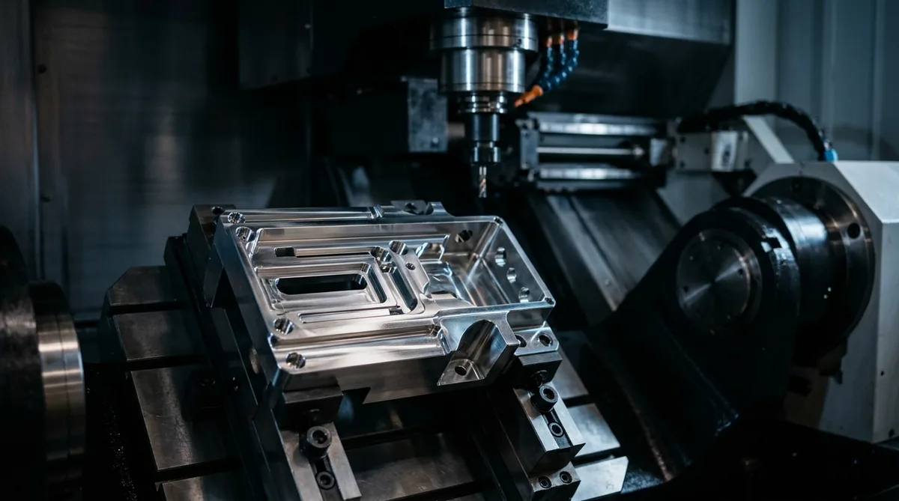
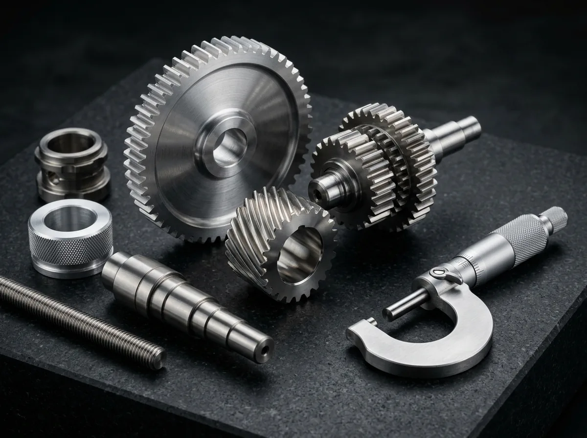

SUS316L±0.003mm
半導体製造装置用 真空フランジ
高真空下でのガス漏れを防ぐ鏡面シール面仕上げ。歪みを抑える独自クランプ治具で一貫加工。
複合旋盤＋5軸半導体
DWG NO. KRD-063 // 5-AXIS CNC & MICRO MACHINING
±0.002mm
最高加工公差（恒温室測定）
1個〜
試作・多品種小ロット専任
3営業日
特急試作の最短出荷実績
99.94%
年間検査合格・納期遵守率

CNC 5-AXIS // Ra 0.2 MIRROR FINISH高真空下でのガス漏れを防ぐ鏡面シール面仕上げ。歪みを抑える独自クランプ治具で一貫加工。
難削材特有の加工硬化を抑えた低速高送り条件で、微細穴と薄肉曲面をバリレス仕上げ。
薄肉リブ構造の反りを防ぐ段階荒取り＋黒色硬質アルマイト処理までワンストップ納入。
高温耐食合金の複雑ポケット形状をワイヤー放電と5軸切削の併用で高精度に再現。
同軸度0.003mm以内を要求される回転軸。円筒研削仕上げと全数検査成績書を添付。
切削熱による寸法変化を防ぐ専用刃具とドライ加工により、滑らかな摺動面を実現。

02 // QUALITY ASSURANCE
ISO9001に基づくトレーサビリティ体制を構築。材料証明（ミルシート）から検査成績書まで一式で提出可能です。
QA-01QA-02QA-03| 設備区分 | メーカー・型式 | 最大加工範囲 / 仕様 | 台数 |
|---|---|---|---|
| 同時5軸マシニングセンタ | DMG MORI DMU 50 | X500 × Y450 × Z400 mm | 02 |
| CNC複合旋盤 | MAZAK INTEGREX i-200 | φ300 × L750 mm | 03 |
| ワイヤー放電加工機 | SODICK ALN400G | 最小精度 ±0.002 mm | 02 |
| CNC三次元測定機 | MITUTOYO CRYSTA-Apex | 恒温室 20℃ ± 1℃ | 01 |
STEP 01
STEP / IGES / DXF / PDF を受領。加工技術者が公差と加工可否を即時確認します。
STEP 02
価格と納期をご回答。コスト削減や精度安定に効く形状・公差のVA案も併記します。
STEP 03
材料手配から5軸MC・複合旋盤・ワイヤー放電まで一貫加工。歪み対策治具も内製。
STEP 04
20℃±1℃の検査室で三次元測定機により幾何公差を計測し、検査成績書を作成。
STEP 05
ミルシート・検査成績書を添付し、打痕防止の個別トレー梱包にて全国へ発送します。
05 // TECHNICAL FAQ
はい、1個からの単品試作を主力としています。明確な2D図面が揃っていない段階でも、3Dデータや現物サンプル、ポンチ絵から寸法を協議し加工図へ落とし込みます。
対応しています。半導体製造装置や医療機器の開発案件が多いため、図面受領前のNDA締結およびデータ管理規定に沿った厳格な取り扱いを徹底しています。
東大阪エリアの専門協力工場と連携しており、真空焼入れ・無電解ニッケル・硬質アルマイト・不動態化処理まで一括手配し、処理後の最終検査を経て納品します。
可能です。特殊合金やお客様支給の鋳物・鍛造素材への追加工も承っています。支給時の注意点はお見積り時にご案内します。
COMPANY PROFILE
06 // REQUEST FOR QUOTATION
1個からの特急試作や、他社で断られた難削材・複雑形状もお気軽にお送りください。加工技術者が直接図面を確認します。